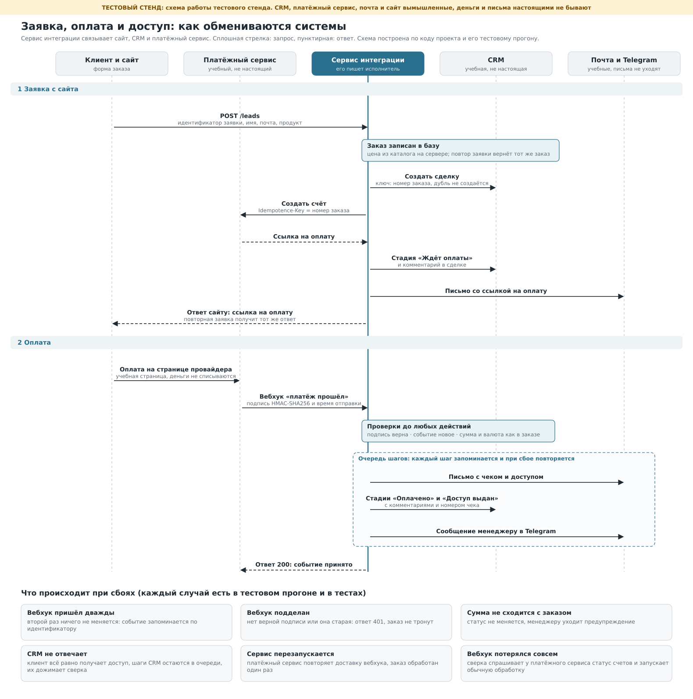

Заявка → CRM → оплата → доступ: проект на Python
Сервис интеграции для сайта с оплатой. Принимает заявку, создаёт сделку в CRM и счёт в платёжном сервисе, принимает подписанные уведомления об оплате (вебхуки), двигает сделку по стадиям, выдаёт доступ, пишет клиенту и менеджеру. Сбой любой из внешних систем не теряет заказ: действие ждёт в очереди и выполняется позже.
Проверено на тестовых сервисах. CRM, платёжный сервис, почта с Telegram и сайт вымышленные, они
запускаются на вашем компьютере вместе с проектом (mocks/). Их API условные и не повторяют API
конкретной CRM или платёжной системы. Проект не запускался с реальными CRM, платёжным сервисом, почтой и
Telegram. Деньги и письма на стенде не настоящие.

Быстрый запуск
pip install -r requirements.txt
python run.py
Проверено на Python 3.13 (Flask 3.1, requests 2.34), на других версиях не запускалось.
Что произойдёт: поднимутся пять локальных серверов (сайт, CRM, платёжный сервис, почта и Telegram, сервис
интеграции) и пройдут восемь сценариев. Каждый заканчивается проверками, при первой неудачной код выхода 1.
Прогон занимает около двух секунд, журнал сохраняется в out/run.log.
Чтобы поработать руками, запустите python run.py --serve: после сценариев стенд остаётся включённым.
В консоли будут адреса формы заказа и доски сделок CRM. Оформите заказ, нажмите на странице оплаты «Оплатить»
или «Отклонить платёж» и смотрите, как меняется сделка. Остановка: Ctrl+C.
Тесты (89 проверок, без внешних библиотек кроме Flask и requests): python -m unittest discover -s tests -t .
Результат тестового прогона
| Показатель | Значение |
|---|---|
| Заказов / сделок в CRM | 8 / 8 |
| Дошли до «Доступ выдан» | 6 |
| Ждёт оплаты / отказ банка, ждёт повтора | 1 / 1 |
| События провайдера | оплата принята 6, отказ 2, запоздавший отказ после оплаты пропущен 1, повтор уже учтённой оплаты пропущен 1, сумма не сошлась 1 |
| Шагов выполнено, в очереди, «мёртвых» | 68, 0, 0 |
| Сообщений | 23: клиентам 16, менеджеру 7 |
| Проверок в сценариях | 44 |
Сценарии
| № | Сценарий | Что проверяется |
|---|---|---|
| 1 | Обычная оплата | Заявка, сделка, счёт, оплата, доступ. Сделка доходит до «Доступ выдан», в её истории три записи. Клиент получает два письма, менеджер одно сообщение. |
| 2 | Двойной клик, чужие данные, подмена цены | Тот же номер заявки возвращает тот же заказ: второй сделки и второго счёта нет. Тот же номер с другим продуктом получает 409. Цена из тела запроса игнорируется. Пустое имя, неверная почта, неизвестный продукт получают 422. |
| 3 | Повтор вебхука | Провайдер дважды присылает обработанное событие. Ответ «duplicate», в CRM и почте ничего не прибавилось. |
| 4 | Поддельные вебхуки, сумма не сходится | Без подписи, с чужой подписью, со старой подписью и с подписью от другого тела: отказ 401. Настоящая подпись, но сумма 1 ₽ вместо 3 500 ₽: статус не меняется, в сделку и менеджеру уходит предупреждение. |
| 5 | Отказ банка, затем успех | Отказ: стадия «Оплата не прошла» и письмо клиенту со ссылкой для повтора. Повторная оплата по той же ссылке проходит. Запоздавший отказ после оплаты игнорируется, оплаченный заказ не откатывается. |
| 6 | CRM недоступна в момент оплаты | Оплата записана, доступ выдан, письмо ушло сразу. Два шага CRM ждут в очереди. После восстановления CRM сверка их выполняет, порядок записей верный, повторных писем нет. |
| 7 | Перезапуск сервиса | Шлюз дважды отвечает 502. Провайдер повторяет доставку (502, 502, 200), заказ обработан один раз. |
| 8 | Вебхук потерялся совсем | Уведомление не дошло. Сверка спрашивает у провайдера статус счетов, находит оплату и запускает обычную обработку. Запоздавшее уведомление потом распознаётся как уже учтённое. |
Как это устроено
Путь заказа. Заявка с сайта: заказ записывается в базу, затем четыре шага (сделка в CRM, счёт, стадия
«Ждёт оплаты», письмо со ссылкой). Вебхук об оплате: проверки, затем пять шагов (доступ, письмо с чеком,
стадии «Оплачено» и «Доступ выдан», сообщение менеджеру). Полная схема в docs/sequence.svg.
Статусы заказа. NEW → AWAITING_PAYMENT → PAYMENT_FAILED или PAID → ACCESS_GRANTED. Статус
меняется только из ожидаемого предыдущего (проверка и запись одним действием), поэтому параллельные запросы
не затирают друг друга.
Защита от дублей на каждом уровне.
| Где | Чем защищено |
|---|---|
| Заявка с сайта | lead_id даёт один заказ; тот же lead_id с другими данными получает 409 |
| Сделка в CRM | external_id равен номеру заказа |
| Счёт у провайдера | заголовок Idempotence-Key равен номеру заказа |
| Комментарий в сделке | uid из номера заказа и названия шага |
| Вебхук | идентификатор события хранится в таблице events |
| Шаги очереди | уникальная пара «заказ + шаг», выполненный шаг не повторяется |
Подпись вебхука. Заголовок X-Demo-Signature: t=<unix-время>,v1=<HMAC-SHA256(секрет, "<t>.<тело запроса>")>.
Подпись проверяется по сырому телу до разбора JSON, сравнение за постоянное время, допустимое расхождение
времени 300 секунд (защита от повторной отправки перехваченного запроса). Причину отказа провайдеру не
сообщаем, она только в журнале.
Очередь шагов. Каждое действие во внешней системе записано как шаг в таблице steps до вызова и
помечается выполненным после. Запрос к внешней системе делается до трёх раз с удваивающейся паузой, если
она ответила 429, 500, 502, 503, 504 или не отвечает; остальные ответы 4xx не повторяются. Если система лежит,
её остальные шаги в этом запуске пропускаются, а шаги других систем выполняются: клиент получает доступ, даже
если CRM недоступна. Шаги CRM одного заказа идут строго по порядку: пока стадия «Оплачено» не записана, «Доступ
выдан» её не обгонит.
Шаг, который не удался 8 раз, считается «мёртвым»: в журнале запись об ошибке, а у сверки, в запуске которой это
случилось, код выхода 1 (удобно привязать к уведомлению планировщика). Мёртвый шаг сам больше не запускается и
виден в таблице steps (status = 'dead'), а следующие шаги CRM этого заказа ждут его. Когда причина устранена,
шаги возвращают в очередь вручную: UPDATE steps SET status = 'pending', attempts = 0 WHERE status = 'dead'.
Отдельной команды для этого нет.
Сверка (python -m integration reconcile, запускать по расписанию). Спрашивает у провайдера статус счетов,
по которым долго нет оплаты (вдруг вебхук потерялся), и повторяет отложенные шаги.
Ответы сервиса. POST /leads: 201 или 200 со ссылкой на оплату, 202 если счёт ещё не выставлен (ссылку
пришлём на почту), 400, 401, 409, 413, 422. POST /webhooks/pay: 200 (принято, повтор или пропущено), 400, 401, 413
и 503 с Retry-After, если счёт по заказу ещё не записан. Тело запроса больше 64 КБ отклоняется сразу.
GET /health: только {"status": "ok"}.
Как подключить свои системы
- Запросы к CRM, платёжному сервису и почте правятся в
integration/clients.py. Методы должны вернуть то, что ждётservice.py:
| Метод | Что возвращает |
|---|---|
CRM.create_deal |
{"id": ...}, повтор с тем же external_id возвращает ту же сделку |
CRM.get_deal |
{"stage": ...} |
CRM.set_stage |
любой ответ 2xx; при недопустимом переходе ответ 409 |
CRM.comment |
любой ответ 2xx; uid защищает от повторной записи |
Pay.create_invoice |
{"id": ..., "pay_url": ...} |
Pay.get_invoice |
{"id", "status", "amount_kop", "currency", "payment": {"id", "receipt": {"number"}}} |
Notifier.send |
любой ответ 2xx |
Названия стадий (NEW, AWAITING_PAYMENT, PAYMENT_FAILED, PAID, ACCESS_GRANTED) сопоставляются со
стадиями вашей воронки внутри CRM.set_stage и CRM.get_deal.
2. Формат вебхука и подпись у каждого провайдера свои. Подпись в integration/signature.py, разбор события
в Service.handle_webhook, правила по статусам в Service._decide. Если провайдер события не подписывает,
доверять событию можно только после запроса статуса платежа в его API: метод Pay.get_invoice для этого
уже есть (его использует сверка).
3. Порядок действий задан списками LEAD_PLAN и PAID_PLAN в integration/service.py. Новый шаг это
функция _s_... и строка в плане. Шаг должен быть безопасным для повтора.
4. Каталог и цены в CATALOG в integration/config.py. В работе его заменяют выгрузкой из вашей базы или CRM.
5. Настройки только из переменных окружения: CRM_URL, CRM_TOKEN, PAY_URL, PAY_KEY,
WEBHOOK_SECRET, MSG_URL, LEAD_TOKEN, ACCESS_SECRET. Необязательные: DB_PATH (по умолчанию
integration.db), MANAGER_CHAT, ACCESS_BASE. Без обязательных переменных сервис не стартует.
6. Запуск: python -m integration serve --host 127.0.0.1 --port 8080 и по расписанию (например, cron раз в
5–10 минут) python -m integration reconcile.
7. Сайт отправляет заявку на сервер вашего сайта, а тот обращается к сервису с заголовком
Authorization: Bearer <LEAD_TOKEN>. Токен нельзя класть в код страницы. Пример серверного обработчика
формы: mocks/site.py.
Ограничения
- Проект проверен только на тестовых сервисах. Каждая реальная CRM и каждый платёжный сервис требуют своего адаптера и проверки: формат запросов, стадии воронки, правила вебхуков, лимиты и тестовый режим.
- Формат вебхука, заголовок подписи и события условные. У реального провайдера они другие.
- Чек на стенде условный и нефискальный (
DEMO-000001). Фискализация по 54-ФЗ настраивается на стороне платёжного сервиса или онлайн-кассы, в проекте её нет. - Шаги выполняются внутри обработчика вебхука. Если CRM отвечает медленно, провайдер может не дождаться ответа и повторит доставку (это безопасно, но неудобно). В работе событие сохраняют, сразу отвечают 200, а шаги выполняет фоновый обработчик.
- SQLite и встроенный сервер Flask подходят для проверки. В работе нужны PostgreSQL, waitress или gunicorn за HTTPS-прокси и блокировка шагов на уровне базы (при нескольких процессах). Блокировки в коде защищают один процесс.
- Письма и сообщения доставляются «минимум один раз»: если процесс упадёт между отправкой и записью шага, письмо может уйти второй раз.
- Выдача доступа это заглушка: ссылка считается из номера заказа и секрета. Подключение к вашей платформе (курсы, чат, облако) отдельный шаг.
- Реальные почта и Telegram не подключались: письма и сообщения уходят в учебный почтовый сервис.
- Не реализованы: возвраты, подписки и регулярные платежи, заказы из нескольких позиций, промокоды, интерфейс администратора.
- Сам сервис (строки с тегом
svc) пишет в журнал номера заказов и заявок, но не имена и адреса почты. В тестовом журнале имена видны, потому что их пишут «рассказчик» сценариев и тестовая почта. Тексты ошибок внешних систем попадают в журнал обрезанными до 120 символов: у реальных систем их стоит проверить на персональные данные.
Структура
run.py сквозной тестовый прогон: 8 сценариев, 44 проверки, журнал в out/run.log
stand.py сборка тестового стенда (для run.py и тестов)
integration/ сервис интеграции
config.py настройки и каталог продуктов
signature.py подпись вебхуков
http.py запросы к внешним системам с повторами
clients.py обёртки над CRM, платёжным сервисом, почтой
store.py SQLite: заказы, события, очередь шагов
service.py вся логика: заявка, вебхук, шаги, сверка
web.py три адреса: /leads, /webhooks/pay, /health
__main__.py python -m integration serve | reconcile
mocks/ тестовые CRM, платёжный сервис, почта и Telegram, сайт
docs/ схема обмена (sequence.svg, sequence.png) и скрипт make_diagram.py, который её строит
tests/ unittest: 89 проверок (подпись, запросы, хранилище, учебные сервисы, сценарии, запуск)